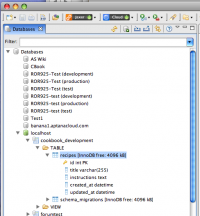

Contents |
What
When you deploy a project to a site on the Aptana Cloud, a new database will be created on the Aptana Cloud the database explorer. A connection to the newly-created database will be created in the Database Explorer plugin.
How
View Database Explorer Perspective
  Database Explorer
Database Explorer
{kind=link}
Switch to the Database Perspective. Open the database tree view by selecting Window > Show View > Database (see Exploring your databases for details).
View Database Explorer From My Cloud
{kind=link}
You can also access the database explorer view for the database associated with your Aptana Cloud site from the My Cloud - Services and Logs screen. Click on the the "Database Explorer" button. This will open the Database Explorer (see Database Explorer for details).
PHP MyAdmin
{kind=link}
You can also click on the"admin" button. A new browser window will launch PHPMyAdmin. To log in here, use the username and password combination you selected in step 3 of Cloud Deployment (see Cloud Deployment for details).